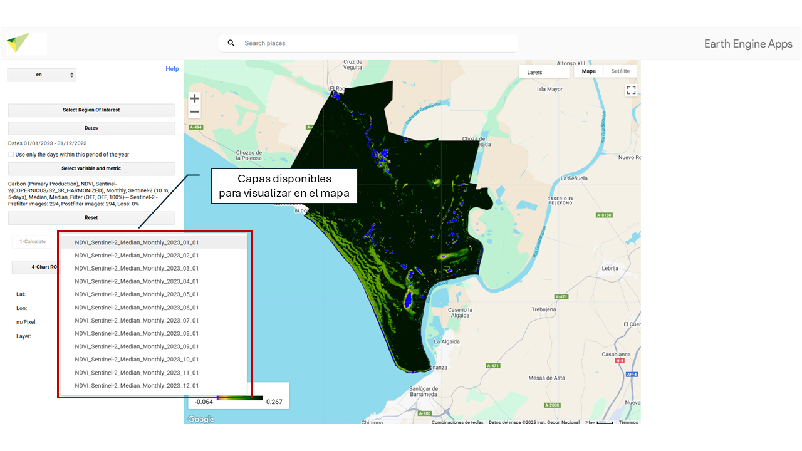
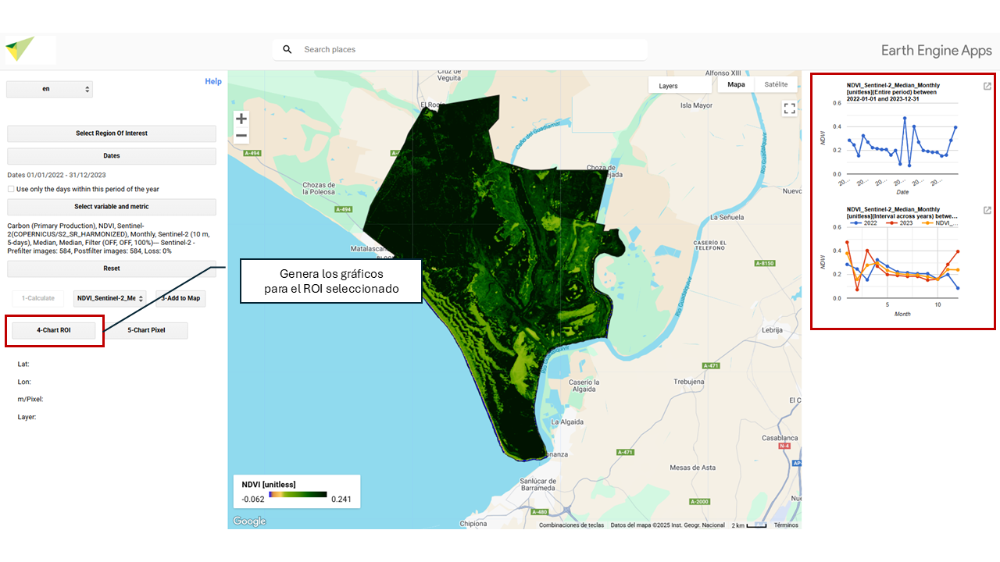
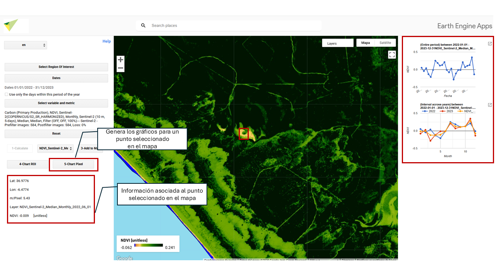

12 Generar mapas y gráficos de resultados

12.2 Seleccionar capa
En la sección aparecerán todas las capas/mapas generados durante el cálculo. Para visualizar una capa específica, selecciónala en “2- Seleccionar capa” y haz clic en “3 - Añadir al mapa”.



12.4 Gráfico ROI
Genera y visualiza los gráficos asociados a los mapas resultantes de tu Región de Interés (ROI por su siglas en inglés). Genera un calculo promedio.

12.5 Gráfico Pixel
Genera y visualiza los gráficos asociados a un píxel seleccionado con tu cursor. Cuando pinchas en un punto de tu área de estudio, esta opción te mostrará los datos correspondientes a su Latitud, Longitud, m/píxel (muestra la resolución del mapa en ese nivel de zoom, en metros por píxel) y el nombre de la capa que estás visualizando.
